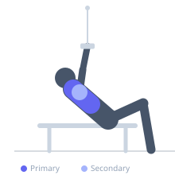
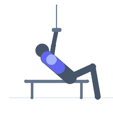

Exercise guide / Incline Bench Cable Flye — Drop Set
Incline Bench Cable Flye — Drop Set
An incline cable flye performed on an adjustable bench set between two cable stacks, executed as a drop set. The incline position targets the clavicular (upper) portion of the pectoralis major, and the cable provides constant tension through the entire arc — unlike dumbbells which lose tension at the top. The drop set structure allows training past initial failure, maximizing upper chest hypertrophy stimulus. The cable's constant tension through the stretch (bottom) and squeeze (top) positions makes this a superior flye variation for complete fiber recruitment.
Primary muscles
pectoralis major clavicular
pectoralis minor
Secondary muscles
deltoid anterior
Stabilizers
triceps long head
Equipment
Adjustable Bench (Incline / Decline)
Cable Machine (Dual Pulley / Functional Trainer)


Starting position
- Set an adjustable bench to 30-45 degrees incline and position it between two cable stacks with the cables at the lowest setting. Lie on the incline bench and hold the low-cable D-handles with arms extended above the chest.
Setup
- Set up two weight loads in advance for the drop: initial heavier load and lighter follow-up. Have a training partner ready to quickly change the weight stacks.
Steps
- Step 1: Begin with arms extended above the chest, handles together, cables from low pulleys.
- Step 2: Lower the arms out to the sides in a wide arc, feeling the stretch in the upper chest at the bottom.
- Step 3: Bring the arms back together in an arc, squeezing the chest at the top. Continue until failure.
- Step 4: Immediately drop to the lighter weight and continue for additional reps to secondary failure.
Coaching cues
- Think of hugging a barrel — the arms maintain the same slight bend throughout the entire arc
- Feel the upper chest stretch at the bottom — the cable maintains tension even here
- Squeeze the hands toward each other at the top — not just touching, but pressing
Breathing
- Inhale as the arms lower outward. Exhale as you bring them together.
Range of motion
- From cables together above chest to a wide arc where the hands are at approximately shoulder height with a full upper chest stretch.
Tempo
- 3s eccentric (open), 1s stretch, 2s press back together. Full ROM on all reps.
Common mistakes
- Excessively bending the elbows, converting the flye into a press — maintain a slight fixed elbow bend throughout
- Allowing the cable to pull the arms too far back, causing shoulder stress at the bottom stretch position
- Rushing the transition during the drop — ensure a safe, quick change
Safety
- The bottom stretch position with cable tension can stress the anterior shoulder — do not go beyond a comfortable stretch
- Have the lighter weight ready before beginning the initial set
Training
- hypertrophy: 10–15 reps
- hypertrophy: 2–3 sets
- Rest: {'hypertrophy': 90}